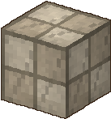
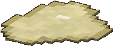
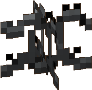
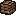

Mechanics & combos
The systems of Zomblocks talk to each other: water carries electricity, explosions set off other explosions, frost makes zombies brittle, noise pulls the horde. Here are the tricks worth knowing.
Explosions
Gas, barrels and tanks are waiting to be set off. Survivors and allies are only pushed by them, never hurt (except by the plague of a virus barrel).

 Gas Column + Lighter
Gas Column + Lighter
Step 1: hit the gas column once (a melee hit or any projectile): it starts leaking gas for 30 seconds and pushes back everything around it.
Step 2: while it leaks, set it on fire with a Lighter (from up to 4 blocks), the Flamethrower or any projectile.
BOOM: 14 damage in a 6 block radius, a huge knock back, and every zombie caught in it burns for 5 seconds.
 Speaker + Gas Column
Speaker + Gas Column
Place a Portable Speaker next to a gas column: for 15 seconds every zombie within 20 blocks gathers around it. Break the column open, step back, light it.


 Chain reactions
Chain reactions
Every explosion sets off the explosive props in its radius: gas columns (even unbroken ones), virus barrels and oxygen tanks. The Boom Launcher (12 damage in 4.5 blocks), Fireworks, virus bombs and exploding zombies all count. Line them up: one shot clears the street, and unlocks the Chain Reaction achievement.
Virus Barrel
Two melee hits, one projectile, a flame or an explosion and it bursts: 10 damage in 5 blocks, and every zombie it hits catches the plague. The plague hurts for 6 seconds and jumps to the nearest zombie, up to 3 times. A toxic cloud stays for a few seconds.
Oxygen Tank
Hit the valve (or catch it in an explosion): it shoots off and bounces around for 2.5 seconds, ramming every zombie on its way (4 damage each), then bursts. Hit 3 zombies with one tank for the Pinball Wizard achievement.
Water + electricity
A wet zombie takes double electric damage and stays shocked twice as long. Water also puts out burning zombies: do not soak the ones you set on fire.


 How to soak them
How to soak them
Water Pistol and Garden Hose: wet for 10 seconds. A splash of the Water Flask: 10 seconds, 3 blocks around. The Sprinkler soaks everything within 4 blocks every second. The buggy's Water Cannon: 10 seconds. A zombie standing in water is always wet.
 Electric Fence + Sprinkler
Electric Fence + Sprinkler
The fence zaps whatever touches it twice a second: 3 damage and a short shock to a zombie. Next to a sprinkler the zombies are always wet: 6 damage every zap. Survivors only get a small shock. Right click the fence to switch it on or off.
 Garden Hose + Electric Bomb
Garden Hose + Electric Bomb
The Electric Bomb shocks every zombie within 4.5 blocks, 7 blocks if it lands in water: 3 damage and 2.5 seconds of shock, both doubled on wet zombies.
 Water Pistol + Taser Gun
Water Pistol + Taser Gun
The taser paralyses a zombie for 3 seconds. Soaked, it stays paralysed 6 seconds and takes double damage.
 Water Cannon + Electric Aura
Water Cannon + Electric Aura
Two buggy modules that love each other: the Water Cannon soaks the zombies, the Electric Aura (every 2 seconds, 10 blocks around the buggy) then hits them twice as hard.
Freeze & shatter
Frost builds up on a zombie until it is frozen solid for 3 seconds. A frozen zombie takes 50% more damage from melee hits.

 Freeze, then hit
Freeze, then hit
The Freezing Blaster adds frost with every puff of nitrogen. Once the zombie is frozen, switch to your strongest melee weapon. Keep 3 zombies frozen at once for the Ice Age achievement.
 Frost mod
Frost mod
A melee weapon with the Frost mod adds a big chunk of frost on half of your hits: three of them freeze a zombie. On the Hockey Stick, every puck freezes a common zombie at once, even after a bounce.


 Stay warm
Stay warm
Frost works on you too. Hot Soup (30 s), Instant Noodles (20 s) and Hot Chocolate (45 s) keep you warm: no frost while it lasts.
Weapon combos
Seven weapon and mod pairs unlock a special power: the Electric Guitar with the Electric mod shocks with every power chord, the Frying Pan with the Fire mod burns on every hit, the Combat Umbrella with the Electric mod calls lightning in a thunderstorm...
Lures
Zombies walk to noise and light. Pull a horde away from you, or into a trap. Bosses never fall for it.
Every lure
How far the zombies hear it, and for how long.
 Sound Decoy (thrown)16 blocks · 3 sPortable Speaker (placed)20 blocks · 15 s
Sound Decoy (thrown)16 blocks · 3 sPortable Speaker (placed)20 blocks · 15 s Flare (thrown, also lights up)32 blocks · 20 s
Flare (thrown, also lights up)32 blocks · 20 s Birthday Cake (when you place it)20 blocks · 10 s
Birthday Cake (when you place it)20 blocks · 10 s Fireworks (where the rocket bursts)16 blocks · 4 s
Fireworks (where the rocket bursts)16 blocks · 4 s Air Horn (zombies within 7 blocks are stunned instead)7 to 32 blocks · 3 sBuggy Warning Lights module25 blocks · while installed
Air Horn (zombies within 7 blocks are stunned instead)7 to 32 blocks · 3 sBuggy Warning Lights module25 blocks · while installed Flare + Barbed Wire
Flare + Barbed Wire
Throw a flare behind a line of barbed wire: every zombie within 32 blocks walks through it, slowed down and hurt every second.
 Air Horn + Fan Propeller
Air Horn + Fan Propeller
Call the horde with the horn, then switch the fan on: they are blown far away. Even better near a cliff.
Traps & gadgets
Things to place, throw and switch on before the horde arrives.

Light Projector
Right click to switch it on. Zombies in its 11 block beam slow down, then catch fire after 4 seconds.

Fan Propeller
Right click: an 8 second storm that blows zombies far away. Push them off a cliff or onto a trap.

Motion Sensor
Marks every zombie passing within 12 blocks and beeps to warn you, even when you are 64 blocks away.

Banana Peel
Eat a banana, keep the peel. Throw it at a zombie or drop it on its path: it slips, takes 2 damage and stays down for 2.5 seconds.

Bowling Ball
6 damage on impact, then it rolls on and knocks down every zombie on its way. Five at once: STRIKE!

Shopping Cart
Hit it to shove it into the horde: the faster it goes, the harder it rams.

Net Launcher
Pins a zombie to the ground for 3 seconds (a boss for 1 second).

Unstable Floor
Collapses under anyone who steps on it, zombies included, and the cracks spread to the next blocks. It rebuilds after a minute.

Glue Puddle
Zombies in it barely move (bosses are only slowed). It dries after 30 seconds.

Barbed Wire
Slows zombies a lot and hurts them every second; survivors are only slowed. It wears out as they cross it.
Did you know?
Small things that make a big difference.

The Blind hunt by ear and never notice a survivor who sneaks. Sprinting is heard 14 blocks away, a melee hit 8, a weapon's right click 20.

A zombie stuck in front of a barricade, weak glass or furniture soon starts bashing it. The Lumberjack and the Zomboni smash through at once.

One hit smashes a barricade or a weak glass block (they take 4 and 3 hits otherwise).

Its beam dazzles and pushes back Night Creepers and the Blind, but it makes noise.

A Firefighter zombie's jet soaks you: your flamethrower and lighter will not light for 4 seconds.

Your next melee hit glues the zombie in place for 2 seconds.

Your next left click breathes fire on the zombies in front of you.

Keep it in your inventory: 35% chance of a bonus drop from every zombie you kill.
Open, it slows your fall like a small parachute.

Carry a piece of furniture and attack: it hits for 3 damage plus 2 per weight point.